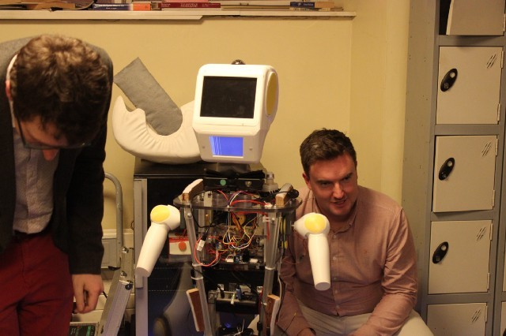
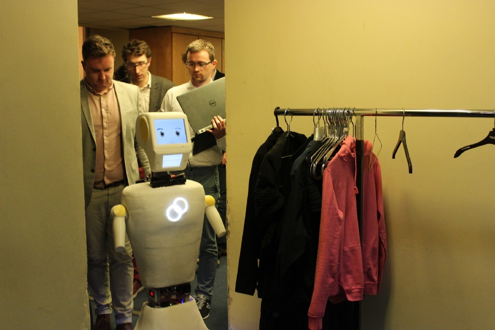
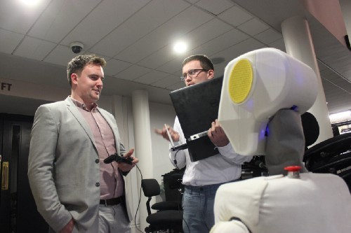
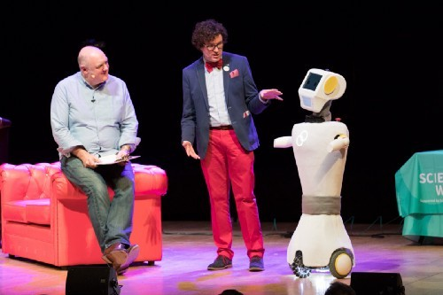
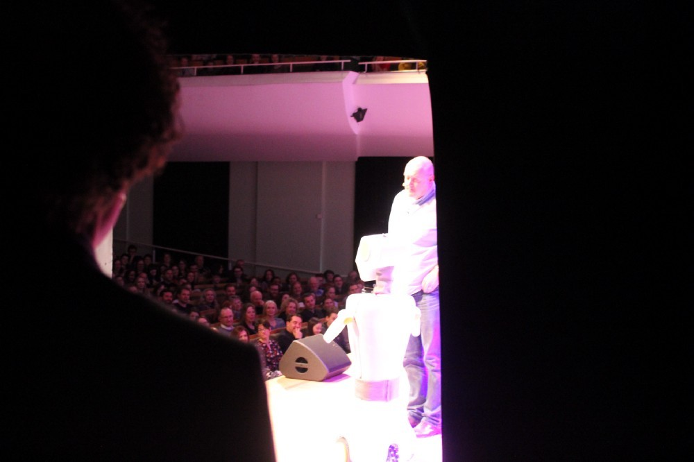

April 6, 2020
For more than two years, I have been leading software development for Stevie the Robot. Firstly at Trinity College Dublin where the project started, and then at Akara Robotics where my part in the story ended.
I have wanted to write about my experiences for a while, and now that I'm quarantining in my house due to the COVID-19 pandemic it's a perfect time to share some of the insights gleaned, challenges faced, and lessons I will take forward to the next chapter in my career.
It has been both an exciting and difficult challenge to bring Stevie from a simple sketch to a product and I feel I have grown personally and professionally as a result of it. My goal is for these articles to be of some use to other software developers interested in robotics, College students looking to go into robotics, or for those working on a robotics startup. They will cover a variety of topics but will also be techie at times.
A startup has many highs and lows, and in general, there were more highs than lows. It was a great start to my career designing and developing programs in such a diverse range of fields. I got to work with web services and APIs, real-time communication and teleoperation, full-stack development, computer vision, conversational AI, voice recognition and speech synthesis, various perception algorithms, system admin, navigation, and a bunch more. What a great first job!
It was extremely challenging coming straight from a degree in Mechanical Engineering as a self-taught programmer to being — for the first year — the only developer on such a software-heavy project. Not having the guidance of an experienced developer often proved quite lonely and difficult, but was balanced by the freedom I had to direct the software development of the project and put my own mark on it. When I started, there was no code that was suitable for use on Stevie and I had to start developing the codebase from scratch, when I left there were tens of thousands of lines of code in production, across four languages, on the robot, in the cloud, and on the browser. Getting there was not an easy task and I learned to be agile, be at ease with a daunting workload, greatly increase my working capacity, and be persistent.
Despite the challenges, it was very satisfying work. There were many times I thought ‘this is the most rewarding experience of my life': like the first time I talked to Stevie and he talked back to me. Or the time we took him apart at the hip and flew him to the US for a month-long pilot. It was a thrilling experience watching him autonomously interact with residents for the first time and anxiously wondering if you have thought through all the edge cases, or the ways people would interact with him, or if there were any lingering bugs that slipped through. Or there was the time I was at home on a weekday morning, in sweatpants, with a cup of coffee in hand, remotely operating our robot and chatting to attendees at the Maker conference in Rome. These experiences are what made the long grinding hours of fixing mutex deadlocks, application binary interface issues and compile-, link- and run-time bugs so rewarding and invigorating.
There were other times that were more nerve-racking than anything else. Like the time we took our first prototype live on stage to a full house with the Irish comedian Dara Ó'Briain:
    As with most startups, it was exciting, challenging, thrilling, and head-wrecking all at the same time. However rewarding it was, I now feel the call of new challenges to work on.
In these articles, I want to go into some of the details of developing software for Stevie, as well as robotics computing in general. Having built up some web dev experience; I have found contrasting the two fields to be a plentiful well of ideas for how to think about robotics differently, so I will be going into some of my ideas on that too. You wear a lot of hats in a startup and I had input on a lot of the commercial aspects of the project, which I would like to share too.
Hope you enjoy the reading.